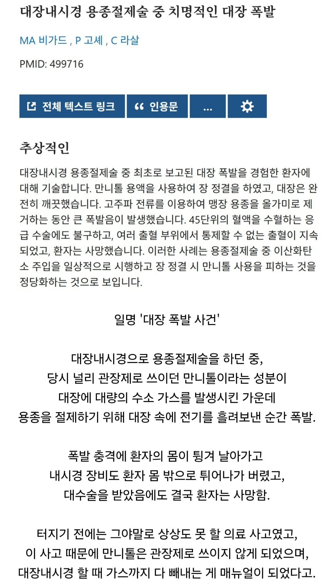

1977년 프랑스에서 있었던 사고임.

1977년 프랑스에서 있었던 사고임.
무려 수소폭탄
피로 쓰여진 수칙...
장 다 터졌겠내 어우
수술하는 사람도 PTSD 오겠는데?ㄷㄷ
곱창 뻥튀기
수소... 위험물 교육 같은거 받으면 존나 위험한거라고 하던데
수소는 반응성이 두번째로 높은 원소일거(1위는 플루오린=불소)
재밌음?
진심으로 궁금해서
11렙인데 제정신인 새끼일거라고 생각하지마셈 ㅋㅋ
그걸 13렙한테 말하냐고
대장이 터져 죽습니다
생존하였다고 해도 몸 절반이 날아갔으니 생존은 장담 못 하네
으아.....
찌릿... 펑!!!
저래서 마지막에 가스 빼는거 먹는건가?
안타깝다 진짜
ㄷㄷㄷㄷㄷㄷㄷㄷㄷㄷㄷㄷㄷㄷㄷㄷㄷㄷㄷㄷㄷㄷㄷㄷㄷㄷ

시발 엉덩이에 폭탄넣고 터트린셈이네